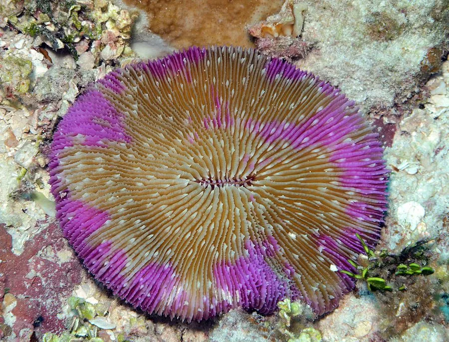

其他无脊椎动物 · 动物界
石芝珊瑚 Fungia fungites

单体生长的圆盘状造礁珊瑚，形似蘑菇或石芝，成体可缓慢移动，是印度—太平洋珊瑚礁中常见的物种。
- 分类
- 门刺胞动物门纲珊瑚纲目石珊瑚目科石芝珊瑚科属石芝珊瑚属
- 栖息环境
- 印度—太平洋珊瑚礁的礁坪和礁坡，成体平躺在礁石上
- 地理分布
- 红海、印度洋和西太平洋珊瑚礁，包括中国南海
- 保护级别
- 暂无评估；受海水升温和采集影响
物种志
石芝珊瑚是单体珊瑚，群体就是一个圆盘或椭圆盘，直径约 10–30 cm，背面有放射状和同心状的肋纹，腹面中央有口，触手短小，体色多为褐色、绿色或紫色，幼体附着生长，成体脱离附着后像一朵蘑菇一样躺在珊瑚礁上。
它生活在印度—太平洋的珊瑚礁区，从浅水礁坪到较深海域都能见到，白天收缩，夜间伸出触手捕食浮游生物，也靠虫黄藻提供营养。石芝珊瑚成体被水流或动物碰撞后可以缓慢移动，翻过来后能自行翻转回去。它分布于红海、印度洋和西太平洋，包括中国南海，是珊瑚礁中常见的单体珊瑚。海水升温、污染和采集都会影响它的生存，珊瑚礁保护区的建立有助于它的种群恢复。
形态与习性
- 食性捕食浮游生物，也靠虫黄藻提供营养
- 体型圆盘直径约 10–30 cm
- 形态单体圆盘状，形似蘑菇或石芝
- 移动成体脱离附着后可缓慢移动
- 栖息珊瑚礁的礁坪和礁坡，成体平躺
- 分布红海、印度洋和西太平洋珊瑚礁
趣味知识
- 石芝珊瑚是一个单体珊瑚，整个圆盘就是一个个体。
- 它成年后会脱离礁石，像蘑菇一样躺在海底，还能缓慢移动。
- 翻过来的石芝珊瑚，可以自己慢慢翻转回去。